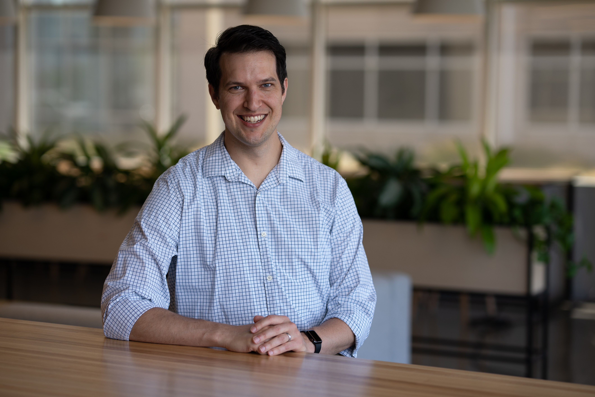
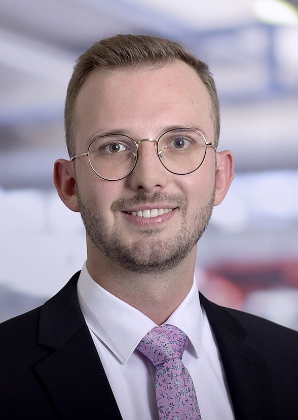
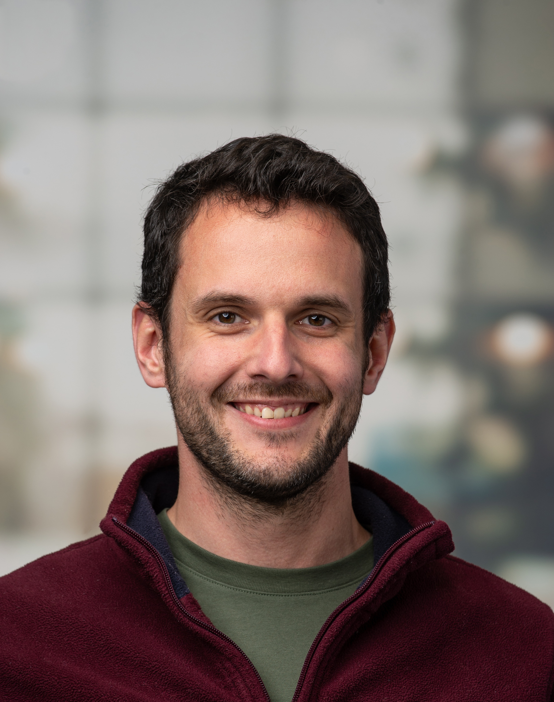

Overview
We are happy to announce the 15th Workshop and Industry Panel on Cooperative Automated Driving and Future Mobility Systems, which has been officially accepted as part of the IEEE Intelligent Vehicles Symposium (IV 2026). This event will take place on 22nd June 2026 in Detroit, MI, United States.
This full-day workshop provides an in-depth exploration of key advancements shaping automated driving and future mobility systems. It examines the interaction between large fleets of fully automated vehicles, but also human-driven vehicles, vulnerable road users, intelligent infrastructure, and coordinating bodies. The workshop also addresses the challenges of deploying Cooperative Intelligent Transportation Systems (C-ITS), which require extensive collaboration among stakeholders, including governments, industry leaders, and researchers. The sessions feature a mix of keynote presentations, a paper session, and industry panels with experts from OEMs, suppliers, and the ICT sector, fostering interactive exchanges between academia and industry.
List of Topics
The workshop is built around topics that are relevant for both academia and industry.
- Reference Architectures and Standardization
- C-ITS Infrastructure and Fleet Management
- Distributed Intelligence and Software Orchestration
- Cooperation and Connection using V2X Communication
- AI-driven Development and AI Systems
- Simulation-based Development and Testing
- Continuous Improvement, DevOps and MLOps
- Modular Safety Assurance and Impact Assessment
Call for Workshop Papers
We invite researchers and professionals to contribute to the 15th Workshop and Industry Panel on Cooperative Automated Driving and Future Mobility Systems. Share your insights and innovations on topics that are shaping the future of mobility, and submit your workshop paper. The key topics are highlighted in the list above but can be adjusted as long they cover theory, methodology, or application in the broad area of future mobility systems.
Important Dates
- Workshop Papers Submission: January 30, 2026
- Notification of Acceptance: February 28, 2026
- Final Paper Submission: March 15, 2026
- Workshop Date: June 22, 2026
Organizers
The workshop is organized by leaders from academia and industry.

Dr. Meng Lu
ITS Aeolix / IEEE Standards Association
Bio
Dr. Meng Lu (The Netherlands) - ITS Aeolix; Member, Board of Governors, IEEE Standards Association (IEEE SA); VP Standards Activities, IEEE Intelligent Transportation Systems Society. Previously, Strategic Innovation Manager at Peek Traffic (NL), Program Manager at the Dutch Institute of Advanced Logistics (NL), and Visiting Professor at the National Laboratory for Automotive Safety and Energy, Tsinghua University (CN). Active involvement in European R&D and innovation projects since 2002. Contribution to standardization activities of ISO/TC 204 (also Head of Delegation (NL) 2021-2023) and IEEE. PhD at Lund University, Sweden; Master's title and degree of Engineering in The Netherlands and P.R. China.

Christian Geller
Institute for Automotive Engineering (ika), RWTH Aachen University
Bio
Christian Geller is a Research Associate and PhD Candidate in the Vehicle Intelligence and Automated Driving department at the Institute for Automotive Engineering (ika) at RWTH Aachen University. His research focuses on simulation architectures, aiming to scale the automated testing process for automated driving systems within the DevOps cycle. As a specialist in simulation-driven development and testing, he works to integrate simulation into the vehicle development lifecycle. He also serves as Project Manager in the German-funded research project autotech.agil, exploring connectivity between all relevant entities in future mobility systems. Additionally, he is one of the main organizers of this joint IV workshop.

Tim Leinmueller
DENSO
Bio
Tim Leinmueller is heading DENSO's European fundamental technology R&D department. His group is responsible for R&D in the domains of cybersecurity, microcontrollers, in-vehicle networks, and wireless communication. Tim is responsible for DENSO's involvement in the 5G Automotive Association (5GAA), where he is an elected member of the board since 2018, and elected Vice Chair of the board since 2024. He has been serving as chair of WG1 from 2019 to 2024. Furthermore, he is representing DENSO in connectivity and CCAM (cooperative, connected and automated mobility) related activities in ETSI, CLEPA, ERTRAC, VDA, the CCAM Partnership, and ERTICO where he is also a member of the strategy committee. In total, Tim is working in the connected vehicles domain for more than 20 years. He is/has been serving in related organizations in multiple positions, amongst others as member of the technical committee and as chair of the architecture working group in the CAR 2 CAR Communication Consortium (C2C-CC).
Description
Different keynotes address essential topics, including Reference Architectures and Standardization, which lay the foundation for interoperability across platforms, and Intelligent Infrastructure and control centers, where smart infrastructure components support real-time vehicle and fleet operation. Distributed Intelligence and Software Orchestration are more advanced strategies for managing complex systems and are discussed to enhance autonomous functionality. Further areas of interest include Cooperative and Collective Functions for vehicle perception or planning to improve traffic safety and efficiency. Crucial foundations for safe and reliable vehicle interaction are secure V2X Communication methods.
Another focus is on AI-driven development and AI systems, exploring how artificial intelligence is transforming both the development process and operational capabilities of intelligent transportation systems, such as decision-making, adaptive route planning, or predictive maintenance. The workshop also emphasizes strategies for Continuous Improvements as part of the DevOps process. In particular, Simulation-Based Development and Testing methods enable robust and Continuous Safety Assurance.
Alongside all keynotes, the workshop also features a paper session, offering attendees a chance to engage with in-depth technical insights and discuss the latest research advancements. The workshop is designed for researchers and industry experts looking to deepen their understanding of both the technical and operational challenges in intelligent transportation systems.
Program Elements
Keynotes, a paper session, and industry panels with OEM, supplier, and ICT experts, plus audience Q&A.
Who Should Attend
Researchers and industry experts focused on cooperative automated driving, C-ITS deployment, and future mobility systems.
Schedule
Workshop program and presentation schedule.
Welcome
Meng Lu, Christian Geller, Tim Leinmüller
Vehicle Cooperation Classes and Their Impact on Automated Driving
Sergei Avedisov, Toyota InfoTech Labs, USA
The Role of Connectivity and Automated Driving Systems: Practical Considerations from the Roadway Infrastructure Side
Jim Misener, WSP, USA
Cooperative Automated Highway Merging Evaluation through Extensive Trials of Interoperable Prototypes
Joschua Schulte-Tigges, University of Applied Sciences Aachen, Germany
Presentation Title TBD
Ignacio Alvarez, Intel Labs
Generative Methods for Mapping and Scene Understanding in Autonomous Driving
Thomas Monninger, Mercedes-Benz Research & Development North America, USA
Taking University Research to the Road: How ika is developing, testing, and operating the karl. Research Vehicle
Lennart Reiher, Institute for Automotive Engineering (ika), RWTH Aachen University, Germany
Presentation Title TBD
Rebeca Delgado, Torc Robotics, USA
UWB-based VRU protection in Urban Scenarios
Tim Leinmueller, DENSO, Germany
Lunch Break
Lunch and attendee networking.
Hybrid Communications: Not only for electrified vehicles
Robert Gee, Continental, USA
Mixed Traffic Cooperative Platooning: from CNN-QMIX to Zone-Aware GAT-QMIX MARL
Brian Park, University of Virginia, USA
Fail Operational Response by Autonomous Vehicles
Aaron Rosekind & Dhruv Patel, Zoox, USA
Coffee Break
Coffee and attendee networking.
Safety Assessment in the Age of End-to-End Learning
Chris van der Ploeg, Netherlands Organisation for Applied Scientific Research (TNO), The Netherlands
Open Industry Panel Discussion
Wrap-up and Conclusions
Speakers
Confirmed speakers and panelists. Final agenda order to be announced.

Ignacio Alvarez
Intel Labs
Presentation title: TBD
Bio
Dr. Ignacio Alvarez is a principal engineer in automated driving at Intel Labs and technical assistant to Intel Labs Director. His research focuses on advanced development of automotive system architectures, software, and simulation tools to accelerate the adoption of safe automated driving. Previously, he worked at BMW developing Vehicle Telematics, HMI and ADS solutions. He has lead R&D and product development in Europe, Asia and America, and contributed to IEEE 2446 and ETSI. He is an avid inventor with 50+ patents, and 130+ patents pending. PhD in Computer Science applied to Automotive Engineering (Univ. Basque Country (ES) & Clemson Univ. (USA)).

Sergei Avedisov
Toyota InfoTech Labs
Vehicle Cooperation Classes and Their Impact on Automated Driving
Bio
Sergei Avedisov works as a Principal Researcher at Toyota InfoTech Labs. His research interests include cooperative localization, cooperative perception, cooperative maneuvering, teleoperated driving, and urban air mobility. Sergei has graduated from the University of Michigan, Ann Arbor with a PhD in Mechanical Engineering in 2019.

Aaron Rosekind
Firmware, Director at Zoox
Fail Operational Response by Autonomous Vehicles
Bio
Aaron Rosekind is an experienced engineering leader specializing in robotics, embedded systems, and firmware development. He has led teams in developing high-reliability, safety-critical software for autonomous vehicles, tactical robotics, and unmanned aerial systems.
Currently at Zoox, Aaron leads firmware teams and drives fail-operational initiatives end-to-end, including system architecture, firmware and software development, and deployment on product software tools. He holds an M.S. in Mechanical Engineering and a B.S. in Computer Systems Engineering from Stanford University.

Lennart Reiher
Institute for Automotive Engineering (ika), RWTH Aachen University
Taking University Research to the Road: How ika is developing, testing, and operating the karl. Research Vehicle
Bio
Lennart Reiher received the M.Sc. degree in Computational Engineering Science from RWTH Aachen University, Aachen, Germany, in 2021. He is currently Group Leader Connectivity for the Vehicle Intelligence & Automated Driving department at the Institute for Automotive Engineering (ika) at RWTH Aachen University. His research interests cover full-stack development for automated and connected driving, particularly in the context of (edge-)cloud connectivity. He has played a key role in building the institute's automated and connected research vehicle “karl.”, both from the hardware and software side. As a PhD student, his dissertation is focusing on offloading automated driving features from on-board compute to the (edge-)cloud.
Joschua Schulte-Tigges
University of Applied Sciences Aachen, Germany
Cooperative Automated Highway Merging Evaluation through Extensive Trials of Interoperable Prototypes
Bio
Joschua Schulte-Tigges is a computer scientist who completed his master's degree at University of Applied Sciences Aachen in 2021. He carried out both his bachelor's thesis (2019) and his master's thesis (2021) at the Hyundai Motor Europe Technical Center. Since 2020, he has led the cooperation between Aachen University of Applied Sciences and Hyundai on the university's side, where he has been responsible for the development of an Automated Driving System (ADS) and the evaluation of various V2X scenarios. Since 2021, he has been pursuing a PhD on this topic, investigating how the Operational Design Domain (ODD) of automated vehicles can be extended through V2X. Also since 2021, he has been leading projects at the university focused on integrating AI into small and medium-sized enterprises (SMEs) and enabling SMEs to adopt to AI.
Rebeca Delgado
Torc Robotics, USA
Presentation title: TBD
Bio
TBD

Robert Gee
Continental
Hybrid Communications: Not only for electrified vehicles
Bio
For over 30 years, Robert Gee has been a strategy manager and futurist for companies including IBM, Motorola, and now Continental. He currently focuses on standards, government, and intellectual property.
Jim Misener
WSP, USA
The Role of Connectivity and Automated Driving Systems: Practical Considerations from the Roadway Infrastructure Side
Bio
Jim Misener is Senior Vice President, Digital Infrastructure and Mobility Innovation at WSP in the U.S. As part of WSP's advisory and planning practice and executive leadership team, he develops and delivers strategies to harness innovation in digitizing transportation deployments, with focus on the synergies of radio communications, private sector and government to provide technical and enterprise transformation to enhance mobility and safety.
Previously, he was Senior Director, Product Management and the Global V2X Ecosystem Lead for Qualcomm. He developed and executed V2X deployment strategy across all global regions, working with automotive, road owner-operator and telecommunications partners. He also develops IoT solutions for transportation markets. Misener established and led the automotive standards team at Qualcomm.
Misener served as an ITS America Board member, ITS California senior advisor, 5GAA Board member and serves on the IEEE ITS Society Board of Governors. He is an Advisory Council member to Mobility 21-Traffic 21 led by Carnegie Mellon University and on the Technical Advisory Board to the Center for Connected and Automated Transportation at the University of Michigan. Misener was a pioneer in vehicle-highway automation and vehicle safety communication at the California Partners for Advanced Transit and Highways (PATH) at UC Berkeley. He has served as PATH Executive Director, Executive Advisor to Booz Allen Hamilton, and as an independent consultant. He holds BS and MS degrees from UCLA and USC, respectively. He is an IEEE Fellow.
Thomas Monninger
Mercedes-Benz Research & Development North America
Generative Methods for Mapping and Scene Understanding in Autonomous Driving
Bio
Thomas Monninger is a Staff Machine Learning Engineer at Mercedes-Benz Research & Development North America, where he specializes in advancing novel machine learning technologies for autonomous driving. Over his ten-year tenure with Mercedes-Benz, he has developed deep technical expertise across Perception, Sensor Fusion, Prediction, and Mapping. An active contributor to the autonomous vehicle research community, Thomas has authored multiple academic papers and holds several related patents. He successfully defended his PhD in Computer Science at the University of Stuttgart, Germany, focusing on Scene Understanding for Autonomous Driving.

Prof. Brian Park
University of Virginia
Mixed Traffic Cooperative Platooning: from CNN-QMIX to Zone-Aware GAT-QMIX MARL
Bio
Brian Park is a Professor in the Civil & Environmental Engineering and Systems & Information Engineering Departments at the University of Virginia and a member of Link Lab. He earned his Ph.D. from Texas A&M University in 1998. A prolific researcher, Dr. Park has published over 190 papers and amassed more than 9,500 citations. His awards include the 2014 George N. Saridis Best Transactions Paper Award and the 2024 Governor?s Environmental Excellence Award. He holds editorial roles with several leading transportation journals. His work focuses on connected and automated vehicles, traffic operations, and cyber-physical transportation systems. Through UVA?s Link Lab, he develops technology solutions?particularly cooperative vehicle control algorithms to enhance the efficiency and safety of surface transportation. He also contributes his expertise to the Transportation Research Board and ASCE technical committees, helping to shape the future of intelligent transportation.

Dhruv Patel
Zoox (Amazon)
Fail Operational Response by Autonomous Vehicles
Bio
Dhruv Patel is a Systems Engineer at Zoox (Amazon) and former Diagnostics Lead at General Motors. He is the inventor of 10 U.S. patents that advance Intelligent Transportation Systems, including innovations in EV range optimization, active safety, road hazard detection, autonomous navigation, and smart diagnostics. His work has enabled regulatory compliance, improved vehicle safety, and enhanced real-time decision-making in connected and automated vehicles. Dhruv is an active member of IEEE ITSS, contributing to standards development and peer review for IEEE and SAE journals. He regularly speaks at IEEE events, promoting innovation across industry and research in future mobility systems.

Dr. Chris van der Ploeg
Netherlands Organisation for Applied Scientific Research (TNO), The Netherlands
Safety Assessment in the Age of End-to-End Learning
Bio
Chris van der Ploeg received the B.Sc.-degree in mechanical engineering and the M.Sc.-degree (cum laude) in systems and control from the Delft University of Technology, Delft, The Netherlands in 2016 and 2018, respectively. He received the Ph.D. degree from the Eindhoven University of Technology, Eindhoven, The Netherlands in 2024. Since 2026, he is an Assistant Professor at the Dynamics and Control Department at the Eindhoven University of Technology. Since 2019, he has been a Research Scientist with the Integrated Vehicle Safety Department, Netherlands Organisation for Applied Scientific Research (TNO), Helmond, The Netherlands. His current research interests include the self- and situational awareness of connected and cooperative vehicles.
Contact
Reach out to the workshop organizers or visit the conference website for updates.